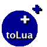

tolua++ - Home
news -
download - documentation - installing -
contact us - lua_qt - Codenix
tolua++ is an extended version of tolua, a tool to integrate
C/C++ code with Lua. tolua++
includes new features oriented to c++ such as:
As well as other features and bugfixes.
News:
1/2/05: version 1.0.4 released. This version contains some bugfixes and new features:
- Ability to customize tolua++'s behaviour to add functionality.
- Basic support for multiple inheritance.
- Several bugfixes on the parser.
- Debian package available for download.
Most of the changes on this version were added for lua_qt, a package
to bind the Qt toolkit to lua.
20/9/04: version 1.0.3 released. This version contains major bugfixes:
- Fixed bugs in object tracking (the 'memory address' bug; there's still some work left, but people should be able to use unions with no problems)
- Fixed parser bugs, functions with template parameters should work, also functions with default parameters that call constructos and with commas on them should work.
- Added a __call method for class names, to replace new_local to create instances owned by lua.
- Fixed other minor bugs.
- Removed the link to win32 binaries, since I aparently don't know what the hell I'm doing with a microsoft compiler ;-)
Everyone should upgrade.
23/10/03: version 1.0.2 released. This version contains major bugfixes:
- Fixed bugs in gargabe collection (thanks to Christian Vogler for doing all the work :-)
- namespaces and nested types are now fully supported.
- Fixed other minor bugs.
Everyone should upgrade.
Downloading
The tolua++ source is freely available by http.
The software provided hereunder is on an "as is" basis, and the author
has no obligation to provide maintenance, support, updates, enhancements,
or modifications.
Current version is 1.0.4, older versions:
tolua++-1.0.4.tar.bz2 [deb]
tolua++-1.0.3.tar.bz2
tolua++-1.0.2.tar.bz2
tolua++-1.0.tar.bz2
Documentation
You can find the manual here or under the doc/ directory
on the distribution.
Instalation
tolua++ uses SCons to build. SCons is based on
python, you can get a stand-alone version on
their website. After you have SCons, follow this simple instructions:
Type 'scons all' to compile.
Type 'scons install'. The default install prefix is /usr/local, so if you are
on a POSIX system, it should work. On other systems, you can change it with the
'prefix' option on command line.
scons prefix=/usr install
or on windows
scons "prefix=c:\Program Files\Visual C" install
Use scons -h to see a list of available command line options.
The files you need (in case you want to do a manual install) are:
- bin/tolua++[.exe] - the main binary
- include/tolua++.h - the header file
- lib/libtolua++.a or lib/tolua++.lib - the library
See INSTALL for instructions on how to install without SCons.
tolua++ and this website are maintained by Ariel Manzur.
Contact us with any
bugs, fixes, suggestions, or questions about this package.